Chapter 5 Results
5.1 Overview of Employment Statistic
Before we dive into the questions about the factors influencing the employment, it would be better that we have an overview of overall civilian labor force in order to understand the data following more clearly.
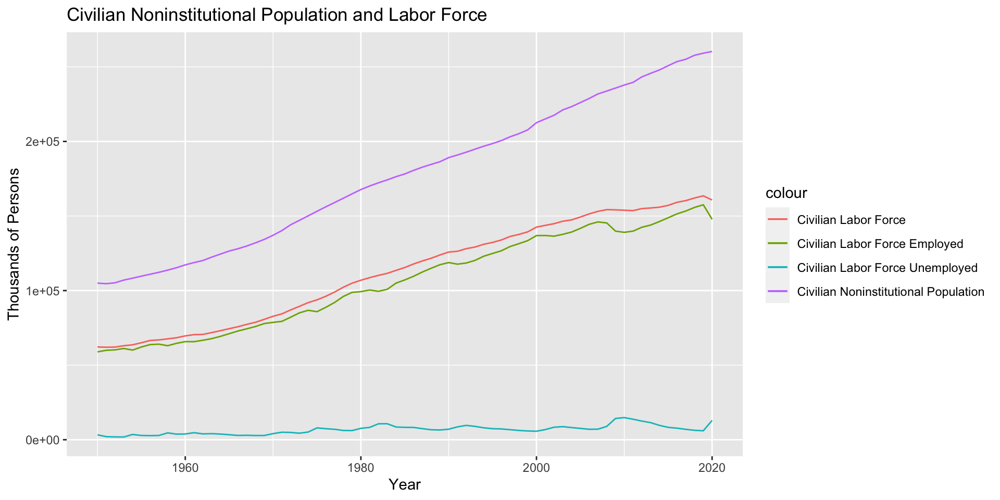
Here, Civilian Noninstitutional Population is defined as persons 16 years of age and older residing in the 50 states and the District of Columbia, who are not inmates of institutions (e.g., penal and mental facilities, homes for the aged), and who are not on active duty in the Armed Forces. Civilian Labor Force is defined as all persons in the civilian noninstitutional population classified as either employed or unemployed. The detailed definition of person’s employment state can be found here.
As we can see, Civilian Noninstitutional Population keeps increasing over time, as same as Civilian Labor Force and Civilian Labor Force Employed.
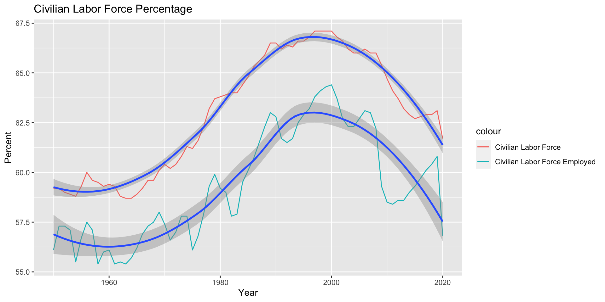
The percentage here is calculated by dividing population of Civilian Labor Force and Civilian Labor Force Employed with Civilian Noninstitutional Population. The first statistic also can be referred as Labor Force Participation Rate.
Both lines of percentage show a similar pattern. Despite of the increasing trend in overall population, the percentage of Civilian Labor Force and Civilian Labor Force Employed reach peak at 2000 and then decreased.
A detailed analysis of Labor Force Participation Rate can be find here, which is not the topic we tend to discuss here. It should be noticed that Labor Force Participation Rate is influenced by social, demographic, and economic trends. Therefore, it’s complicated to explain the change of this statistic over time.
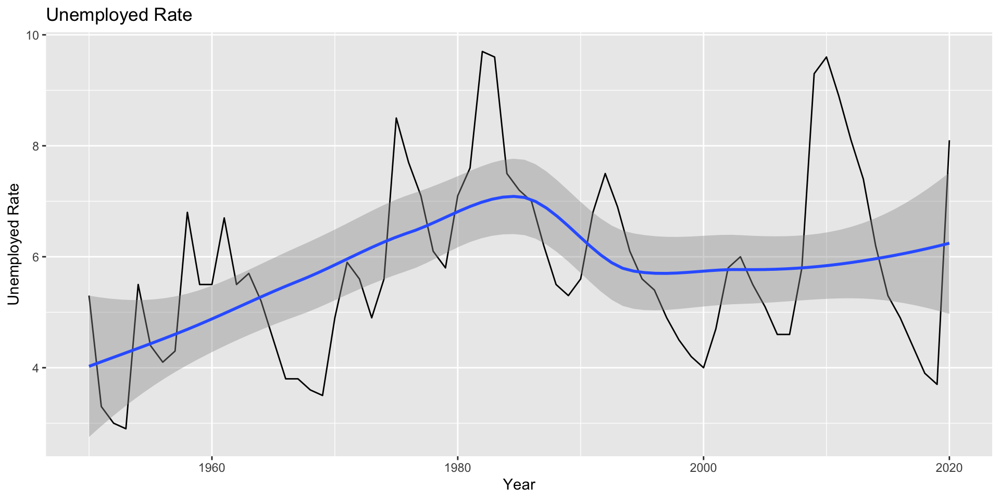
The Unemployment Rate is defined by the ratio of unemployed to the civilian labor force expressed as a percent [i.e., 100 times (unemployed/labor force)]. Therefore, the Unemployment Rate indicates what degree of people who try but can not find a job.
As we can see, the Unemployment Rate changes rapidly over time and in 2020 it reached another peak again. Despite the constant change over time, the Unemployment Rate hovers around 6% in general.
5.2 Discrimination in Employment
Now we want to find out whether it exists discrimination in employment in different industries in recent period.
5.2.1 Sex Discrimination
First we examine the sex discrimination.
From a whole review, we can see that women significantly had less Civilian Labor Force Percent and Labor Force Employed Percent of population, despite the increasing of Civilian Noninstitutional Population over time. It indicates that women are likely not to have a job or try to pursue a job compared with men, which shows discrimination in the overall employment. The graph also shows that the gap in Civilian Labor Force Percent between men and women has been narrowed in recent years, indicating the situation may be changing to a good way.
However, as the last graph suggests, the Unemployment Rate for men and women shows a very similar pattern. Actually, the Unemployment Rate for women always shows a little bit less than men. This shows that it’s not more difficult for women to find a job if they want to in the overall picture of employment.
Next let’s try to examine the sex discrimination in different occupation.
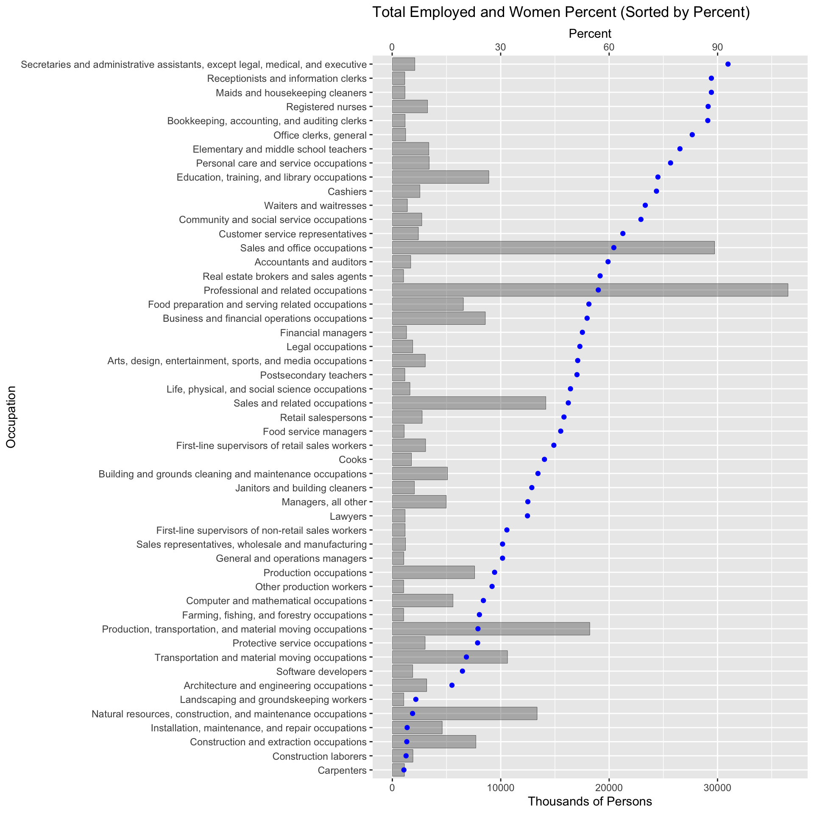
Here we only display the occupations which have total employed population over 1MM, due to the large number of occupations. Data was collected in 2020, which shows the recent state of total employee and percent of women employee.
From the graph we can find that there is a strong sex preference in a lot of occupations. For example, secretary and administrative assistant have a very strong tendency to women, which have over 90% of women employee. While in occupations related to construction, the percent of women employee is pretty low.
Some discrimination in the graph may be explained reasonably. For example, construction laborers has a strong preference to men because the work requires strong physical labor and apparently it fits to men physically. Occupation of elementary and middle school teachers has a strong tendency to women, which may be resulted from the social common sense that women are more patient, considerate and obviously better at looking after children. However, such explains also indicate that the discrimination towards sex has deeply rooted at the culture and social common sense, which tell people what men should do and women should do.
Besides, there are some occupations with discrimination towards sex, which can not be explained easily, such as software developers, computer and mathematical occupations, which have a tendency to men; bookkeeping, accounting and auditing clerks have a strong tendency to women.
5.2.2 Race Discrimination
Now we focus on the discrimination towards races.
Again we only display the occupations which have total employed population over 1MM, due to the large number of occupations. Data was collected in 2020, which shows the recent state of total employee and percent of employee of different races.
We can find out that there is discrimination in different occupations, and the degree of it varies according to the occupation. Occupations related to computer science have a strong tendency to Asian compared with other occupations. If we read the graph carefully, we can find that Asian tend to have occupations with higher requirements of professional knowledge, especially related to field of science, engineering and finance.
We can also observe that percent of Asian employee has a negative correlation with percent of White and Hispanic or Latino employee, but doesn’t seem to have a correlation with percent of Black or African American employee.
This phenomenon can be explained by saying that in the recent decades many Asian come to the U.S. to pursue a Master or PHD degree, who tend to stay in the U.S. and continue their career. Still, the discrimination exists.
5.3 Change of Employment Situation
Now we want to answer a question: How does the employment situation change in the recent years? Is there any improvement about employment in different industries?
We can answer the first question according to the graph at first part. Civilian Noninstitutional Population keeps increasing over time, while the Labor Force Participation Rate reached peak at 2000 and then kept decreasing until now. The Unemployment Rate changes rapidly over time and in 2020 it reached another peak again. Despite of the constant change over time, the Unemployment Rate hovers around 6% in general.
The conclusions above suggest that on the whole, the employment situation doesn’t improve, and may change rapidly due to external factors, such as COVID-19 and Great Recession.
Now we want to examine the employment situation in different industries in recent years.
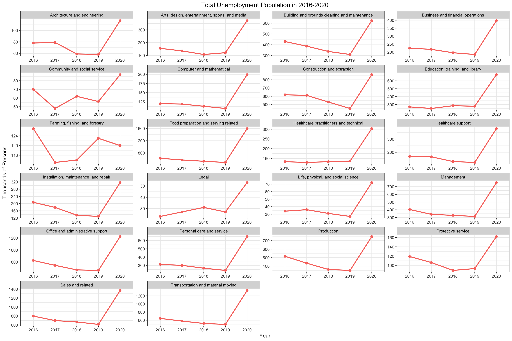
The figure above displays the total unemployed population in recent 5 years in different occupations. Although different occupations have different degree of population, the trend looks consistent.
We can see that almost all occupations share a same pattern: the unemployed population decrease slowly from 2016 to 2019, and then rapidly increase in 2020. Occupation about arming, fishing and forestry seems to be an exception, which increased a little in 2019 but decreased in 2020.
The reason behind rapid increasing in 2020 is well known to everyone: COVID-19. It’s good to see that before 2020 the unemployment population have an overall deceasing trend in most occupations, which suggests a good trend in the employment situation.
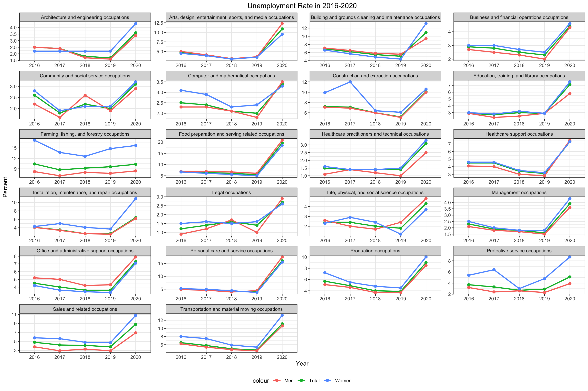
The graph above display the Unemployed Rate of total, men and women.
The trend here is similar with the previous graph. Since we use the Unemployment Rate, we can now compare the employment situation between different occupations. For example, we can find that food preparation and serving related occupation suffered most in 2020 due to COVID-19 and people tend to stay at home instead of eating outside at restaurant.
Besides, we can not find an obvious relation between Unemployment Rate of men and women, except they share a similar pattern due to external factors. According to the graph, the difference varies between different occupations.
5.4 Stirctness of requirement in the industries and workers’ type
5.4.1 The strcitness based on industries
Background Knowledge: Certifications are issued by a non-governmental certification body and convey that an individual has the knowledge or skill to perform a specific job.
A license is awarded by a government agency and conveys a legal authority to work in an occupation.
Licenses are harder to gain compare to the certificates.
Thus, to some extent, licenses are more strict than certificates.
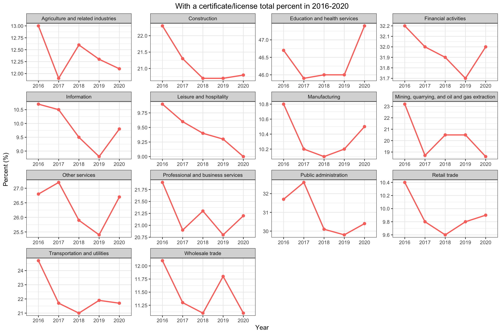 Based on the graphs above shows with a certificate/license total percent calculates the percentage of workers who has a certificate or licenses in the overall employed people in the industry, and here is divided in to several specific industries:
Based on the information, we divide the levels of the percentage(the strict level) as follows: low: below 20% medium: 20%-30% high: above 30%
For Agriculture and related industries: It suddenly drop from 2016 to 2017, from 13% to 11.9%, while rise form 2017 to 2018 and keep going down from 2018 to 2020, from 12.6% to 12.1%. But its overall percentage is low compare to the other industry, and in the recent years, its require for a license or certificate is decreasing
For Construction industry: It almost keep going done from 2016 to 2020, more specifically, from 2018 to 2020, it has almost no changes. It shows the requirement to enter this industry is becoming less strict, but its strict level is medium.
For the Education and health services: It goes done from 2016 to 2017, and keep almost the same from 2017 to 2019 while in 2020, it rises, from 46% to 47.4%. This means in the recent years, this industry is becoming more strict, and at the same time, this industry has high level of strictness.
For the Financial activities: It keeps going done from 2016 to 2019 and rises in 2020, which returns to the value in 2017. Thus, although having some fluctuation, this industry has the sign of keeping the similar strict level. The strict level of this industry is medium based on its values.
For the Information industry: It keeps going done from 2016 to 2019, and rise from 2019 to 2020 but the value is lower than in 2016. It actually become less strict but has the sign of becoming more strict. Its level of strictness is low.
For the Leisure and hospitality: It keeps going done form 2016 to 2020, thus it would be reasonably to predict it would keep going done in the future years. Its strict level is low.
For the Manufacturing industry: It decrease from 2016 to 2017 but keep going up from 2017 to 2020 with little fluctuation, thus we predict it would keep rising in the future years. The strict level is low.
For the Mining , quarrying, oil and gas extraction industry: It drops a lot from 2016 to 2017 but rises from 2017 to 2018 and keeps the same from 2018 to 2019 then drops from 2019 to 2020. Thus, it would be reasonable to assume it would goes done in the future. Its struct level is medium.
For the Other services: It rises a bit from 2016 to 2017 and keep dropping fro 2017 to 2019 and rises from 2019 to 2020 in a relatively large amount. Thus we would predict it would become more strict in the near future. The level of strictness is medium.
For the Professional and business services: It drops from 2016 to 2017 and keeps fluctuating from 2017 to 2020. In this sense, it will have the sign of fluctuating in the near future. The strict level is medium.
For the Public administration industry: It rises a bit from 2016 to 2017 but drops more from 2017 to 2018 and has small changes from 2018 to 2020. From this pattern, it is reasonable to assume it would keep total percentage as around 30% in the near future which is a medium value.
For the Retail Trade: It keeps dropping from 2016 to 2018 and rises from 2019 to 2020 with speed slowing done. Thus, It is reasonably predict it would rise a bit in the near future.
For the Transportation and utilities: It goes done from 2016 to 2018, dropping with a large amount and rises a little from 2018 to 2019 and drops a little from 2019 to 2020. So it is more likely to keep in this data range in the near future, around 21% to 22%. It strict level is medium.
For Wholesale trade: It keeps going done from 2016 to 2018 and rise a lot from 2018 to 2019 and then drops a lot from 2019 to 2020. Thus, it is reasonably to predict it would goes done in the near future. Its level of strictness is low.
Based on the analysis: The LOW strict industries are: Agriculture and related industries; Information; Leisure and hospitality; Manufacturing; Retail trade; Wholesale trade
The MEDIUM strict industries are: Construction; Financial activities; Mining, quarrying, and oil and gas extraction; Other Services; Professional and business services; Transportation and utilities;
The HIGH strict industries are: Education and health services; Public administration;
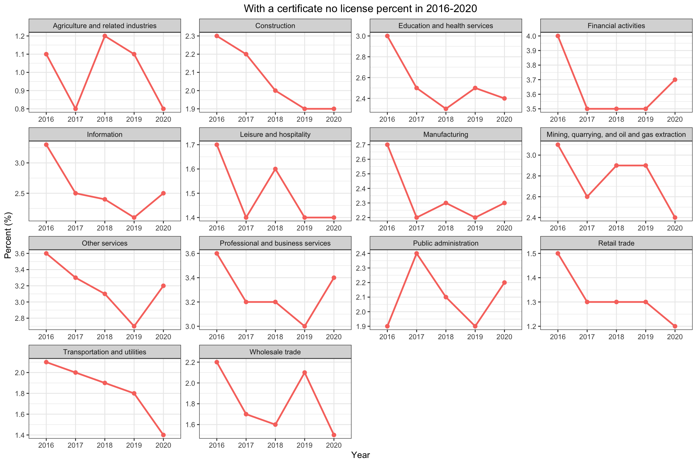 The above graphs is to show the percentage of having a certificate but no licenses:
Almost each industries keeps the same pattern as the overall patterns for license and certificate except Education and health services(only having certificate goes done from 2019 to 2020), Leisure and hospitality(only having certificate has rising from 2017 to 2018 instead of keeping dropping) and Retail trade(only having certificate drops from 2019 to 2020)
Besides, the percent of only having a certificate is low in all industries, all belows 5% which means more people would prefer actually to gain a license.
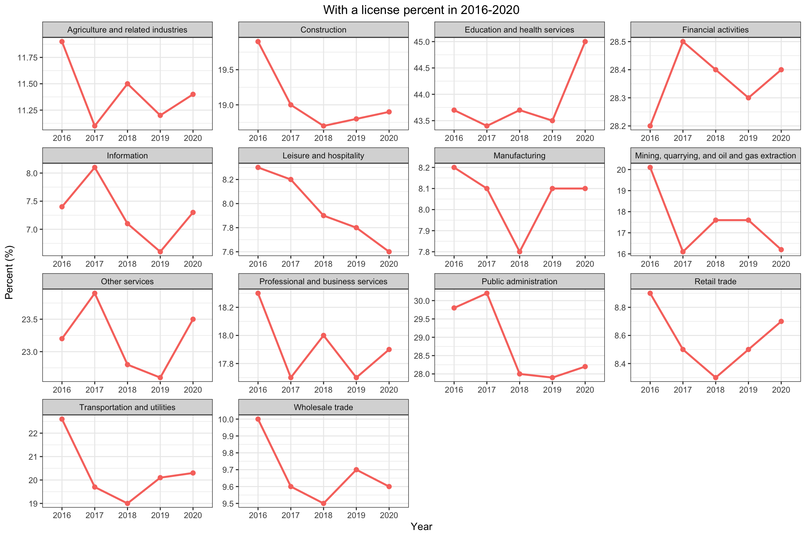 The above graphs is to show the percentage of having a license(a people have a license may also have a certificate):
All of the industries keep the same pattern which is reasonable since having a license weight more in overall having a certificate or license
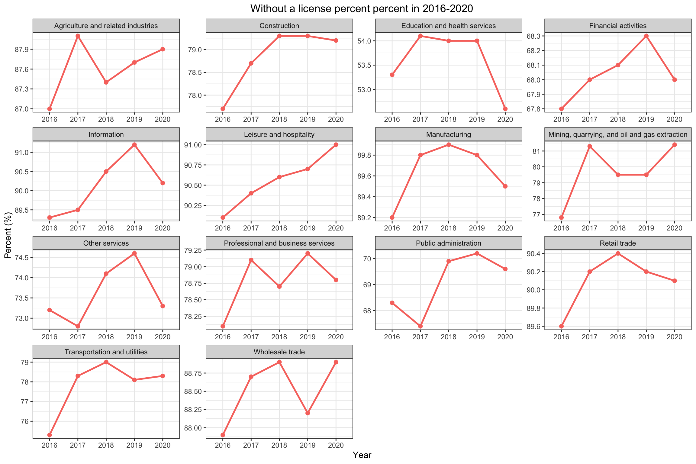 The above graphs shows the employed people who have not a licenses:
From the graphs and values, we could see that most people would not have license or certificate, the lowest industry, Education and health service, even above 50%.
Considering the dividence of work in each industry, having a high value of license or certificate seems not reasonable but the patterns we evaluate above could still offer useful information for people to choose industries to work in.
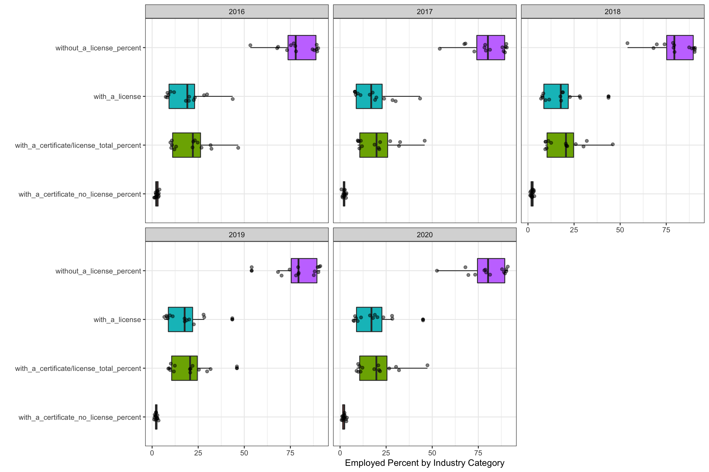 The above graphs shows the distribution in the industries:
After comparing the graphs in these 5 years, we could see that that difference is little. And we could conclude from here that, the minimum requirement of each industry would keep the similar in the near future, without big fluctuation. And when people consider to choose to work in some industry, considering the license or certificate percentage would be useful for planning the overall career goal.
5.4.2 The strictness based on wokers’ type
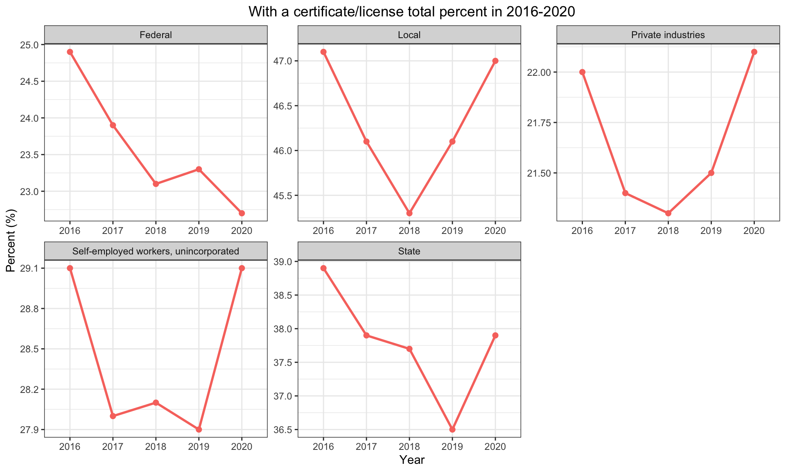 From this point, we look at the data in a different angle, by looking at the workers categories, whether previate industries, Federal, State, Local or Self_employment:
From the above graphs, keep using the levels for strictness defined above: The LOW strict level: None The MEDIUM strict level: Federal; Private Industries; Self-employed workers, unincorporated; The HIGH strict level: Local; State
Thus, the Local and state have high license or certificate requirement.
Detailed analysis of the above graphs:
For the Federal: It is in the medium level. It keeps going done from 2016 to 2020 except from 2018 to 2019 rising a little. Thus, we could predict it would keeps going done in the near future.
For the Local: It is in the high level. It drops from 2016 to 2018 while rising from 2018 to 2020, back to the similar level. Therefore, it has rising trend in the near future.
For the State: It is in the high level. It drops from 2016 to 2019 and rise relatively large from 2019 to 2020. Thus, it has the rising trend in the near future.
For the Private industries: It is in the medium level. It drops from 2016 to 2018 and rises from 2018 to 2020, even exceed the values in 2016. Therefore, it is reasonable to predict it would rise in the near future.
For the Self_employed workers, unincorporated: It is in the medium level. It drops a lot from 2016 to 2017 while rises a bit in from 2017 to 2018. However, it drops again from 2018 to 2019 but rises a lot from 2019 to 2020, back to the similar values in 2016. Thues, it is reasonable to predict it would rise in the near future.
Based on the analysis above, the government jobs, federal, state and local would be more strict. Besides, four out of five has the pattern of rising beginning either in 2018 or 2019. Thus, it would be reasonable to expect rising in local , private insutries, self-employed and state.
The above graphs shows the worker category with a certificate but no license:
Most of them have the similar pattern except the self-employment workers which rises at first then drop and then rise instead of drop, keep the same and rise.
And from these graphs, we could also see that the percentage of only have a certificate without a license is relatively low which could indicate that prople would prefer a license or a license would mainly useful but a certificate is not that useful
The above graphs shows the percentage of having a license, but these people may also have a certificate:
All of these five have the similar pattern as the overall percentage graphs, which also indicates that having a license is dominent in having a license or certificate.
The above graphs shoes the percentage of not having a license or certificate:
From these graphs we could also see that the percentage of not having a license or certificate is still large, which is consistent with the distribution of workers in each industry.
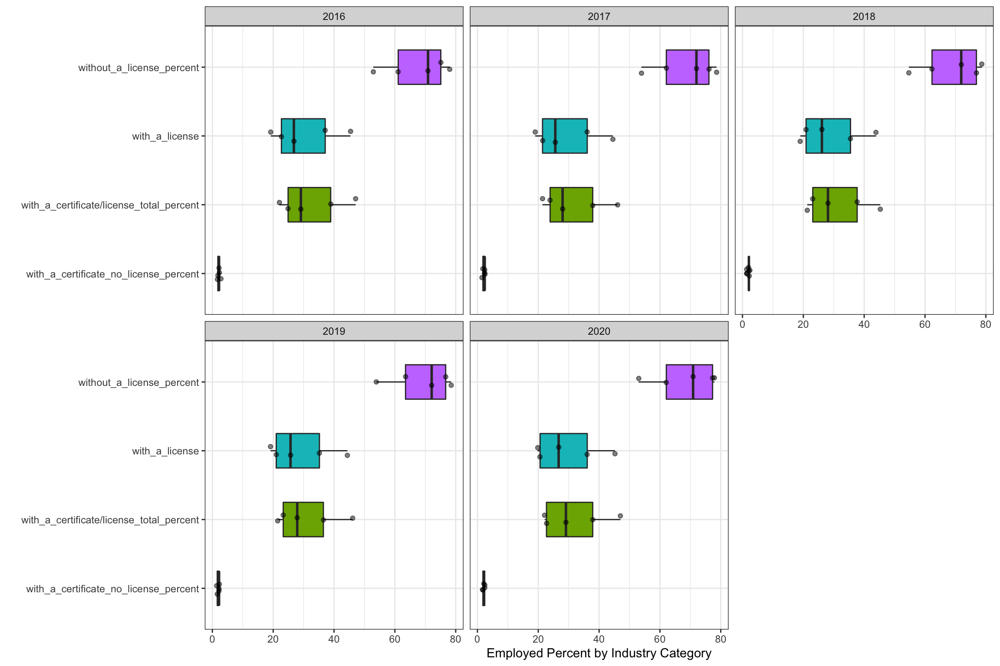 The above graphs shows the distribution of the workers’ categories:
From these graphs, from 2016 to 2020, all keep the similar pattern, which could tell us that the requirment of license or certificate is not an accident and would keep the similar in the near future
The above graphs give a more fancy way to show the data of percentage of license or certificate in each industry, the darker red it is means more percentage, could be over 75%, the darker blue it is means less percentage, could be less than 25%
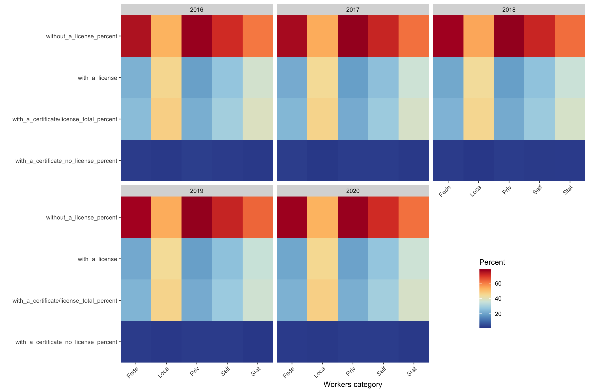 Also the above graphs give a more fancy way to show the percentage of license or certificate based on the workers’ category, the darker the red is means more percentage, the darker the blue is means less percentage.
Conclusion:
Based on the analysis above, some industries would become more strict in the near future based on their current level of strictness: Education and health services; Manufacturing; Other services; Retail Trade; and the government related work categories would expect to become more strict.